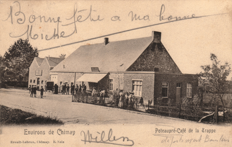

Red
The original Trappist ale, Red has notes of pit fruit, candy sugar, nutmeg, juniper and thyme. Silky smooth palate. Perfect as an apéritif.
Red has been brewed at Scourmont Abbey for just shy of 150 years. As the original Chimay, Red is also known as the Première, the French for first.
ABV: 7%
White
Dry and floral with notes white raisins, honey and citrus peel. A light hop bitterness rounds out the taste. Crisp and refreshing, pairs well with sunny days.
First brewed in 1966, White is also known as "Cinq Cents" as it was first bottled on the 500th anniversary of the town of Chimay. It is the only Chimay available on draught.
ABV: 8%
Blue
Chocolate brown and smooth as velvet, this dark ale is rich with flavors of caramel, dark fruits and even a touch of pepper. A full-bodied palate and warming finish make it an ideal fireside companion.
Also know as "Grand Réserve" Blue's flavors mature with time and it can be aged well beyond 2 years.
ABV: 9%
Beer is historical. It carries traces of its past in every pour. Beer is also geographical. A region's water, soil, climate and geology imbue it with certain attributes that are unique to its provenance. Together these qualities form terroir—the taste of a place—and a beer is nothing without them.
Chimay is a small village in the French-speaking Walloon region of southwestern Belgium. The village is located at the foothills of the Ardennes mountain range in the middle of a lush wetland known as La Fagne. To the north is the Condroz plateau, a series of undulating, grass-covered valleys carved out of limestone. France and its storied Champagne region begin just seven miles west. And burbling up from the aquifer beneath it is the source of Chimay's calcium-rich water, the river Oise.
La Fagne's wetland is fed by calcium-rich groundwater derived from massive beds of limestone, the remnants of a 400-million-year-old coral reef that once covered the region. When the carbon dioxide in water mixes with limestone it forms calcium bicarbonate. It is this calcium bicarbonate and other dissolved minerals in Chimay's water that give the beers their characteristic richness and depth.
In Chimay, small-scale family farms dot the picturesque countryside, transforming the landscape into rolling hills of green and yellow patchwork. Centuries of tradition dictate that great care be taken to preserve the integrity of the soil and that only sustainable and responsible practices be used to cultivate the land. Most farms are certified organic, producing barley, wheat, rapeseed small herds of dairy cows.
The monks at Chimay are stewards of the land. They source much of their barley and wheat from local farms and use the milk from the dairy cows in their renowned cheeses. Many small farms struggle to compete against farming conglomerates in a volatile and unpredictable market, and the monastery contributes subsides to these farms, ensuring that they remain prosperous and able to produce their fine crops for years to come.
Though Belgium and the other Low Countries are known for their temperate climate, the Ardennes region is the exception—a land of extremes. It is both the coldest and the wettest; the highest in elevation and the farthest inland. These conditions blanket the region in dense fog, keeping Chimay cool, moist and verdant all year-round.
Water
Ever wonder why the Irish have their stout, the Czechs have their Pilsener and Germans their lagers? The answer is water. Virtually all of the world's greatest regional beer styles were originally crafted to compliment the mineral composition of the local water they were brewed with. It is for that reason that no expense is spared to protect the source of Chimay water, every drop of which is drawn from two artesian wells in a forest on the monastery's land.
Yeast
During the Second World War Chimay was occupied by the Germans who destroyed the brewery and scrapped its copper kettles to make armaments. By 1948 the brewery had been repaired but the monks were in need of a new yeast strain as theirs had been destroyed with the brewery. The job fell to Father Theodore, the Abbey's most famous brewmaster, who set about isolating a new strain. Today, some sixty years later, the fruits of his labor are alive and well in every bottle of Chimay. In fact these yeast cells naturally carbonate the beer during bottle conditioning. Not bad for a few trillion microscopic cells.
Hops
Attaining the level of complexity the monks demand of their beer requires that Chimay's hops be sourced from all over the globe—from the northwest of Belgium and the Hallertau in Bavaria to the Yakima Valley of Washington state. Legend has it that after U.S. troops freed the monastery from Nazi occupation in the waning months of WWII, the monks at Chimay were determined to show the their gratitude by sourcing a portion of their annual hops bill from America.
Wheat
Durham wheat, the fifth and final ingredient lends complexity to the palate and a smothness to the finish. Mouthfeel, a crucial albeit overlooked quality of beer, is something we excel at, a claim that is borne out by every sip of a Chimay.
In the end you're only as good as your supplier and quality is elemental. In order to make best beer possible, we must use the best ingredients available. Developing a relationship with a supplier takes time and trust. We're happy to be on a first name basis with our farmers.
Trappist
Though there are 174 Trappist monasteries worldwide, only seven of them brew beer in accordance with rules set out by the International Trappist Association.
In order to use the "Authentic Trappist Product" logo, abbeys must obey three cardinal rules:
-
Brewing
All beer must be brewed within the walls of a Trappist monastery.
-
Oversight
Brewery operations must be overseen and monitored by the entire Trappist community.
-
Charity
The majority of profits from the sale of each beer must go to charitable causes around the world.
-
600 AD
Monasteries in Europe begin brewing and selling beer.
-
1029
First mention of Chimay is attributed to Allard I of Chimay, part of a royal family that spans centuries.
-

1850
A small group of monks from Westvletern establish Notre-Dame de Scourmont Abbey on land donated by the Prince of Chimay.
-

1862
The monks at Scourmont Abbey begin brewing beer which they call "Chimay" in honor of the Prince.
-
1940
Nazi Germany invades at the start of World War II. The monastery is occupied and the brewery is destroyed.
-
1948
Chimay's Father Theodore isolates the yeast strain that is used to this day. Chimay Blue is brewed as a Christmas beer.
-
1966
Father Theodore creates the White, a hoppier Tripel, completing Chimay’s family of beers.
-
1983
First import of Chimay to the United States by Manneken-Brussel Imports of Austin, TX.
-
2001
White becomes the first Chimay to be served on draught in the US.
-
2012
Chimay will celebrate its 150th birthday.
Chimay is sold in every state except for Mississippi. For more information on where to find Chimay:
Sending your message. Please wait...
Thanks for sending your message! We'll get back to you shortly.
There was a problem sending your message. Please try again.
Please complete all the fields in the form before sending.
For international: www.chimay.com
For ITA: www.trappist.com
Imported by Manneken-Brussel Imports, Austin, TX.
For more info 1-800-616-3474 or info@mbibeer.com
©2011 Chimay ® Trappist ® Ale, Bières de Chimay SA. All rights regarding the site, its contents, and its architecture, and in particularly, but not exclusively, photographs, texts, logos, lay-outs, drawings, slogans, trade names and other items belonging to this site are reserved.